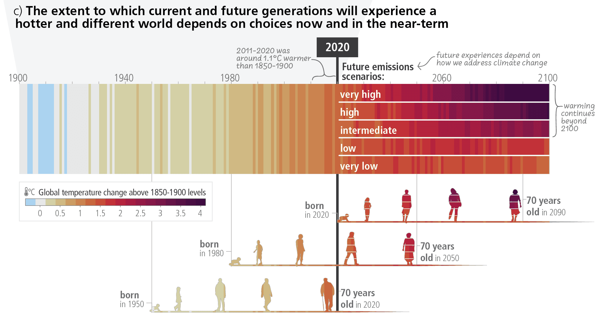

Week 4: Sensitivity & Peer Check
Understanding Uncertainty and Validation
Today’s Agenda
- A2 Evidence Map presentations
- The Stakeholder Reality Check - lessons from A1
- Stakeholder engagement frameworks
- Defining measurable success for community-facing design
- Sensitivity analysis for social outcomes
- Peer review workshop with stakeholder lens
- Building trust through transparent uncertainty communication
A2 Evidence Map Gallery Walk (Almost ready?)
Format: 5-minute poster presentations (Self)
- Step 1: Record yourself presenting on camera
- Step 2: Listen to yourself presenting in the video
What to listen for:
- What evidence gaps are most critical?
- Where do sources contradict each other?
- What methods show most promise?
- What contextual factors matter most?
The Stakeholder Reality Check
Lessons from A1: Decision Claims
What We Observed in A1
The Good:
- Creative design objects with clear potential
- Strong technical focus and performance awareness
- Genuine interest in evidence-based design
The Gap:
- “Community engagement” without community voices
- Studio briefs mention “users” but no contact plan
- Metrics missing entirely, or too vague to measure
- Stakeholders identified but not actually engaged
The “Community Engagement” Trap
The Engagement Trap: A Common Pattern
This scenario plays out repeatedly in community-facing projects: Architects conduct “community workshops” asking what spaces people want, then design accordingly.
The missing piece: No one defines what “success” looks like or how it will be measured.
Typical result: Beautiful buildings that don’t get used as intended because the engagement process focused on preferences, not performance criteria.
Real examples: Post-occupancy studies consistently show that community buildings designed through consultation alone often underperform compared to those that establish shared success metrics upfront.
The lesson: Engagement isn’t just asking opinions—it’s building shared metrics for success.
Studio Projects vs. Real Stakeholders
Your current studio brief probably says:
- “Design for the community”
- “Consider user needs”
- “Engage with local context”
But ask yourself:
- Who exactly is “the community”? Demographics/Interests/Socio-economics?
- What do they actually need evidence about? Accessibility/Acoustic/Thermal Comfort/Lighting?
- How would they measure if your design succeeds?
- When was the last time you talked to them?
Stakeholder Mapping for Real Projects
The Stakeholder Ecosystem
Power/Interest Grid Exercise
High Power, High Interest
- Decision makers
- Funding bodies
- Primary users
These are your champions or biggest obstacles
High Interest, Low Power
- End users
- Community groups
- Future occupants
These are your insight sources
Key insight: Different stakeholders need different evidence, presented differently.
Stakeholder Engagement Methods
Level 1: Research Stakeholders (most A1 projects are here)
- Literature review of user needs
- Precedent studies of similar projects
- Assumptions about what matters
Level 2: Consult Stakeholders (where you should be)
- Direct interviews about priorities
- Surveys about current challenges
- Observation of existing behaviors
Level 3: Collaborate with Stakeholders (advanced projects)
- Co-design workshops
- Iterative feedback loops
- Shared measurement frameworks
Converting Studio Briefs to Stakeholder Questions
Exercise: Reframe Your Brief
Instead of: “Design affordable housing for young professionals”
Ask:
- What do young professionals actually spend money on vs. save on?
- What housing features would they trade off for location/cost?
- How do they currently find and evaluate housing options?
- What would make them stay in a neighborhood long-term?
The shift: From designing FOR stakeholders to designing WITH stakeholder evidence.
Metrics That Matter to Real People
The Measurement Problem
Common in A1:
- “User satisfaction will improve”
- “Community engagement will increase”
- “The space will be well-used”
Missing:
- How exactly will you measure this?
- What counts as “improvement”?
- Who decides if it’s working?
Three Types of Stakeholder Metrics
1. Outcome Metrics (What stakeholders ultimately care about)
- Property values, health outcomes, social cohesion
- Hard to measure, but highest impact
2. Process Metrics (How the design affects daily experience)
- Usage patterns, maintenance costs, comfort levels
- Measurable, directly linked to design decisions
3. Perception Metrics (How stakeholders feel about the design)
- Satisfaction surveys, preference studies, sense of ownership
- Subjective but essential for adoption
Real Metrics for MArch Studio Projects
Example: Community Library Renovation
Instead of: “The design will better serve the community”
Specific metrics:
- Usage: Hours of operation possible with new lighting/HVAC
- Access: % of collection accessible to mobility-impaired users
- Programming: Number of simultaneous activities the space can support
- Maintenance: Annual cleaning/repair hours required
- Community ownership: % of local residents who can name one thing they like about the space
Metrics You Can Actually Measure (This Semester)
Spatial Analysis:
- Square footage efficiency, circulation distances
- Natural light levels, acoustic performance
- Storage capacity, flexibility configurations
User Behavior Observation:
- Space utilization patterns, dwell times
- Movement flows, gathering locations
- Peak usage times, conflict points
Stakeholder Surveys:
- Preference rankings, trade-off priorities
- Current frustrations, unmet needs
- Success criteria and deal-breakers
Understanding Sensitivity
But now with a stakeholder lens
What is Sensitivity Analysis?
Testing how results change when you vary input assumptions, parameters, or methods.
Purpose:
- Understand which factors matter most to different stakeholders
- Identify robust vs. fragile conclusions across stakeholder priorities
- Guide data collection priorities based on stakeholder concerns
- Communicate confidence appropriately to build stakeholder trust
The stakeholder dimension: Same design change can be “successful” to some stakeholders, “problematic” to others.
Types of Sensitivity
Parameter sensitivity:
- How do results change with different input values?
- Which parameters have the largest impact on stakeholder priorities?
Method sensitivity:
- Do different analysis approaches give similar results?
- How do modeling choices affect conclusions stakeholders draw?
Stakeholder sensitivity: (New dimension for A3)
- Do findings hold across different stakeholder groups?
- What factors matter most to which stakeholders?
- Where do stakeholder priorities conflict?
Context sensitivity:
- Do findings hold across different buildings, climates, user groups?
- What local factors might change the results?
Example: Window Performance Analysis
Key parameters to test:
- Window-to-wall ratio (30%, 40%, 50%, 60%)
- Glass type (single, double, low-e, tinted)
- Orientation (north, south, east, west)
- Shading (none, overhangs, side fins, both)
Traditional sensitivity questions:
- Which parameter has the biggest energy impact?
- Do rankings change across different climates?
- How sensitive are results to occupancy assumptions?
Stakeholder sensitivity questions:
- Do developers care more about construction cost or operating cost?
- How do occupant preferences vary by age/culture/work style?
- Which factors matter most to building managers vs. tenants?
Real Example: The View vs. Comfort Dilemma
Case Study: Hong Kong Office Tower
Technical analysis: South-facing windows cause overheating, reduce energy efficiency
Stakeholder analysis:
- Tenants: Want prestigious views, willing to pay premium
- Property manager: Worried about cooling costs and complaints
- Sustainability consultant: Focused on energy performance
- Developer: Wants maximum rentable premium space
Sensitivity insight: Solution depends entirely on whose priorities dominate the decision.
Uncertainty Quantification
Sources of Uncertainty
Measurement uncertainty:
- Sensor accuracy and calibration
- Sampling limitations and bias
- Missing or incomplete data
Model uncertainty:
- Simplified physics and assumptions
- Parameter estimation errors
- Validation limitations
Context uncertainty:
- Different building types, climates, users
- Changing conditions over time
- Scaling from specific to general cases
Expressing Uncertainty
Confidence intervals:
- “Energy savings: 15-25% (95% confidence)”
- Range that likely contains true value
Sensitivity ranges:
- “Results vary from 10-30% depending on occupancy assumptions”
- Shows impact of key uncertainties
Scenario analysis:
- Best case, worst case, most likely outcomes
- “Under optimistic assumptions… under conservative assumptions…”
Uncertainty Communication
Good practices:
- Report ranges, not point estimates
- Explain sources of uncertainty
- Use error bars or confidence bands
- Acknowledge limitations explicitly
Avoid:
- False precision (e.g., “23.7% savings”)
- Hiding uncertainty or limitations
- Overconfident claims from limited data
- Ignoring context sensitivity
Community Engagement Planning Framework
Moving from “engaging communities” to measurable engagement
The Engagement Spectrum
Information Sharing (Where most projects start)
- Present design to community
- Share technical analysis results
- Explain why decisions were made
Consultation (Where most projects think they are)
- Ask for community opinions
- Survey preferences and concerns
- Hold public meetings and workshops
Collaboration (Where evidence-based projects should be)
- Co-define success metrics with community
- Shared data collection and analysis
- Joint interpretation of results
Building Your Engagement Plan
The 5-Question Framework
- Who specifically needs to be engaged? (Names, not categories)
- What decisions do they influence? (Specific choices, not general input)
- When in your process do they need to be involved? (Before/during/after analysis)
- How will you measure successful engagement? (Evidence of influence on your work)
- Why should they participate? (What’s in it for them)
Key insight: Community engagement is a research method, not just a requirement.
Practical Engagement for A3 Projects
Before you design:
- Interview 3-5 stakeholders about current challenges
- Observe how they currently use similar spaces
- Document their success criteria and concerns
During design development:
- Test key assumptions with stakeholder feedback
- Share preliminary analysis results for validation
- Iterate based on stakeholder priorities
After initial analysis:
- Present findings in stakeholder-friendly formats
- Get feedback on interpretation and implications
- Plan implementation strategies together
Peer Review Workshop
Now with stakeholder accountability
Peer Review Purpose
For authors:
- Identify blind spots and weaknesses
- Get feedback from different perspectives
- Practice explaining complex methods
- Build confidence through validation
For reviewers:
- Learn from others’ approaches
- Develop critical evaluation skills
- Practice professional feedback
- Contribute to collective learning
Review Structure
Phase 1: Method exchange (15 minutes)
- Present your A3 research design to partner
- Focus on approach, not results
- Ask clarifying questions about method
Phase 2: Stakeholder reality check (10 minutes)
- Who are your actual stakeholders? (Names, not categories)
- How will you measure success from their perspective?
- What evidence would convince them to change their practice?
Phase 3: Critical feedback (10 minutes)
- What assumptions need testing?
- What could go wrong with this approach?
- What alternative explanations exist?
- How could the method be strengthened?
Effective Peer Review
Be specific:
- “Consider testing occupancy sensitivity” vs. “Think about assumptions”
- Point to particular sections or claims
- Suggest concrete improvements
Be constructive:
- Identify both strengths and areas for improvement
- Suggest solutions, not just problems
- Focus on helping the research succeed
Be professional:
- Critique the work, not the person
- Use “I” statements: “I’m unclear about…”
- Acknowledge limitations of your own expertise
Review Checklist
Research design clarity:
- Are research questions specific and testable?
- Is the method appropriate for the questions?
- Are key assumptions stated explicitly?
Stakeholder connection:
- Are stakeholders real people with names/contact info?
- Do you know what evidence would convince them?
- Have you planned concrete engagement activities?
Measurement specificity:
- Can you measure what you claim to be testing?
- Do your metrics match stakeholder priorities?
- Do you have realistic success criteria?
Feasibility assessment:
- Can this actually be completed this semester?
- Are required resources available?
- Are technical skills realistic?
Validity concerns:
- What factors might confound results?
- How will quality be ensured?
- What are the main limitations?
Data Visualization for Uncertainty
Showing Variability
Error bars:
Standard deviation or confidence intervals
Shows uncertainty around point estimates
Good for comparing multiple alternatives


Box plots:
- Shows distribution shape, outliers, quartiles
- Good for comparing groups or conditions
- Reveals data quality issues


Scatter plots with trend lines:
- Shows relationship strength and variability
- Confidence bands around regression lines
- Individual data points visible


Scenario Visualization
Tornado diagrams:
- Shows impact of different parameter assumptions
- Horizontal bars showing sensitivity ranges
- Quick identification of key variables


Scenario comparison charts:
- Best case, base case, worst case outcomes
- Multiple bars or lines for different assumptions
- Clear labeling of scenario definitions
- Example Scenario Chart: Fig SPM1(a) from AR6 Synthesis Report, Climate Change 2023 
Uncertainty Communication Examples
Good: “Energy savings range from 15-25% across different occupancy scenarios, with 20% most likely under typical conditions”
Bad: “Energy savings are 19.7%”
Good: “User satisfaction improved in 7 of 9 tested configurations (confidence: moderate)”
Bad: “User satisfaction improved”
Excel/Sheets Uncertainty Analysis
Simple Sensitivity Analysis
Parameter tables:
- Vary one parameter across different values
- Calculate outcomes for each scenario
- Create charts showing relationships
Two-way tables:
- Vary two parameters simultaneously
- Use conditional formatting for heat maps
- Identify interaction effects
- Give it a try at Geekforgeeks
Monte Carlo in Spreadsheets
Basic approach:
- Use RAND() functions to generate input variations
- Calculate many scenarios (100-1000 trials)
- Analyze distribution of outcomes
- Report percentiles or confidence intervals
Example application:
- Uncertain occupancy schedules
- Variable weather conditions
- Range of user preferences
Mini Case Study: Uncertainty in Practice
The Problem
Client question: “Will this daylighting strategy work in our office building?”
Initial analysis: Average daylight levels meet targets
Stakeholder complications emerged:
- Facility manager: Worried about glare complaints
- IT department: Concerned about screen visibility
- HR: Wants employee satisfaction data
- Sustainability team: Focused on energy savings
Sensitivity analysis revealed:
- Results highly sensitive to furniture layout assumptions
- Performance varies dramatically by floor and orientation
- Weather variability creates 30% performance range
- Different stakeholders prioritized different metrics
The Solution
Multi-stakeholder recommendation:
- Strategy works well on south-facing floors with adjustable blinds (facility manager)
- North floors need supplementary electric lighting but save energy overall (sustainability)
- Flexible furniture layouts essential with user control options (HR)
- Pilot testing on one floor first to validate assumptions (all stakeholders)
Key insight: Technical uncertainty was manageable; stakeholder uncertainty was the real challenge.
Looking Ahead: A3 Pilot Studies
Pilot Study Goals
Validate your method:
- Does your approach actually work?
- Can you collect the data you planned?
- Do results make sense?
Identify challenges:
- What takes longer than expected?
- What skills/tools do you need?
- Where do you need help?
Refine approach:
- What can be simplified?
- What needs to be expanded?
- How can quality be improved?
Pilot Study Scope
Keep it small:
- 1-2 test cases, not comprehensive analysis
- Focus on method validation, not complete results
- 2-3 hours of work maximum
Document everything:
- What you actually did vs. what you planned
- Problems encountered and solutions tried
- Time required for each step
- Lessons learned and revisions needed
Next Week: Pilot Implementation
Monday-Wednesday:
- Conduct pilot studies
- Document challenges and solutions
- Revise methods based on learning
Class session:
- Pilot results sharing
- Troubleshooting workshop
- A3 finalization
Questions & Discussion
- What aspects of your method feel most uncertain?
- How might you test the sensitivity of your key assumptions?
- Who are your actual stakeholders and how will you engage them?
- What specific metrics matter most to your stakeholders?
- What would increase your confidence in your results?
Key Takeaways
- Identify real stakeholders with names and contact plans - not just categories
- Define specific, measurable success criteria - that stakeholders actually care about
- Test sensitivity across stakeholder priorities - not just technical parameters
- Build engagement into your research method - not just consultation
- Acknowledge uncertainty - ranges build trust, false precision destroys it
- Pilot with stakeholder feedback - iterate based on their input
Next week: Putting methods into practice - pilot study implementation and troubleshooting